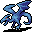
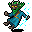

雲烟の魔術師の居室 Cloud Mages' Chambers
英語版 CrawlWiki の記事「Cloud Mages' Chambers」(0.32 向け、2024-10-17 版)の翻訳です。原文の著者は編集履歴をご覧ください。
この記事は 0.32 の時点の内容で、最新の 0.34 とは違うところがあるかもしれません。
| 湿気のせいか、絶えず流れる雲のせいか、ここの地面はいつまでも湿ったままだ。 |
雲烟の魔術師の居室は、白い水晶(ほかの場所で見つかる水晶の壁と働きは同じ)で造られた魔術師の研究所で、大気と雲を操ることに捧げられている。造りはかなり単純で、マップの下半分に小さな宝物部屋が 2 つ、いちばん上にボスの部屋がある。道中では「ふわふわの綿雲」が視界をさえぎり、大気や稲妻や雲にちなんだ敵が襲ってくる。
ここの脅威はいろいろあるが、いちばん多いのは電撃のダメージなので、居室を攻略するには rElec がとても役に立つ。ほかの脅威の一部には、負のエネルギーへの耐性や冷気への耐性も役に立つ。運よくクァズラルを信仰しているときや雲のローブを着ているときにここへ来られたなら、ここの多くのモンスターをずっと気にせずに済む。
ここのクリーチャーの中には射撃がひどく当たりにくいものがいるので、射撃武器を専門にしているキャラクターは、控えにまともな近接武器を用意しておくといい。
下の 2 つの部屋の宝物はほとんどが薬と巻物だ(耐性の薬、煙幕の巻物、静寂の巻物がよく出る)。ただし凝結の風見や反発のスカーフのような珍しいアイテムが出ることもある。ボスの部屋には風の魔術にちなんだアイテム(魔法書や大気の杖)、良い指輪(飛行の指輪や躱し身の指輪など)、猛進や飛行のブーツがある。この研究所では、雲烟の魔術師の武器として、あるいは居室の戦利品として、クイックブレードが出ることもかなり多い。
モンスター
- E
 大気の精霊- そこそこの近接攻撃をしてくる相手。速度と EV が高く、こちらを 1 ターン麻痺させる能力を持つ。
大気の精霊- そこそこの近接攻撃をしてくる相手。速度と EV が高く、こちらを 1 ターン麻痺させる能力を持つ。 - S
 電撃の大蛇- 電気の蛇。電光の矢を放ち、傷を負うとさらに電撃で反撃してくる。
電撃の大蛇- 電気の蛇。電光の矢を放ち、傷を負うとさらに電撃で反撃してくる。 - y
 電光蜂- こちらも電撃を得意とする蜂。反撃はしてこないが、自分を稲妻の矢にして飛び込んでくる。
電光蜂- こちらも電撃を得意とする蜂。反撃はしてこないが、自分を稲妻の矢にして飛び込んでくる。 - k

風ドレイク- 近接攻撃は弱いが、飛び道具をはじき、旋風の一撃を唱え、こちらを後ろへ押しやる。 - k
 デスドレイク- これもかなり弱いが、恐ろしい瘴気の雲を吐く。
デスドレイク- これもかなり弱いが、恐ろしい瘴気の雲を吐く。 - t
 幽霊蟹- ちょこまか走り回る厄介者。霊体の霧を大量に吐き出してこちらの生命力を衰弱させ、幽体の援軍を呼び出す。
幽霊蟹- ちょこまか走り回る厄介者。霊体の霧を大量に吐き出してこちらの生命力を衰弱させ、幽体の援軍を呼び出す。 - t
 黙示録の蟹- 純粋な混沌の雲を吐く危険な甲殻類。
黙示録の蟹- 純粋な混沌の雲を吐く危険な甲殻類。 - 2
 氷河の悪魔- 氷と嵐の悪魔。旋風の一撃に加えて、冷気と電撃の大きなダメージを与えてくる。
氷河の悪魔- 氷と嵐の悪魔。旋風の一撃に加えて、冷気と電撃の大きなダメージを与えてくる。 - i

スプリガンの風術師- 小柄な魔術師。飛び道具をはじき、稲妻と旋風の一撃を浴びせてくる。 - v
 竜巻- 魔術師の研究所の壁の外にいて、ヴォールトの飾りのようなものだ。この壁を壊して開けてはいけない。竜巻はほとんど不死身で、絶えず極渦の効果をまとっているので、たちまち渦に巻かれて惨めな死を迎えることになる。
竜巻- 魔術師の研究所の壁の外にいて、ヴォールトの飾りのようなものだ。この壁を壊して開けてはいけない。竜巻はほとんど不死身で、絶えず極渦の効果をまとっているので、たちまち渦に巻かれて惨めな死を迎えることになる。


ボス: 雲烟の魔術師
いちばん上の部屋の中央には、ランダムな名前を持つ雲烟の魔術師がいる。戦う前に仲間から引き離しておくといい。近接戦に持ち込めば、風の魔術で叩きのめすかわりにお粗末な近接攻撃に頼ることが多い。ただし近づくと極渦はより危険になる。あるいは、攻撃呪文をそれなりに使える呪文使いなら、かなり手早く消し飛ばせるはずだ。
| 雲を自在に操る術を極めた奇妙な魔術師で、巧みで不吉な神秘の身振りをしている。 |
@ 
HP: 150
HD: 20
呪文: 旋風の一撃、極渦
装備: 電撃のクイックブレード/ダガー、または大気の杖。ローブ(雲のローブがまだほかの場所で生成されていなければ、必ずそれになる)
おすすめの対処: 強力な遠隔攻撃があるなら距離を保つこと。必要なら静寂で封じ込めるのがよく効く。
ソース
(コンソール版で)色を変えた水でできた階の縁の部分は、いくらか削って(#)にしてある。わざわざ壁を壊しでもしないかぎり、飾り以外の意味はないからだ。A が入口、< が出口、 ! がふわふわの綿雲の発生源、n が透明な石、b が水晶、5 が雲烟の魔術師、f と d が戦利品。[1]
MAP ################################################ ################################################ #########nnnnnnnnnnnnnnnnnnnnnnnnnnnnnn######### #######nnn............................nnn####### #####nnn...wwwwwwwwwwwwwwwwwwwwwwwwww...nnn##### ####nn...wwwwwwwbbbbbbbbbbbbbbbbbbbbwww...nn#### ####n..wwwwwwwbbbbbbbbbbbbbbbbbbbbbbwwwww..n#### ###nn.wwwwwwbbbbbbbb''b''b''b''b''bbwwwwww.nn### ###n..wwwwwbb.....b'!''''''''''''!'bwwwwww..n### ##nn.wwwwwwbb.fff.b''''''''''''''''bwwwwwww.nn## ##n..wwwwwbbb.fff.b''''''''''''''''bWWWWWWW..n## ##n..wwwwwbbb.fff.+'''5''''''''''''+.........n## ##n..wwwwwbbb.fff.b''''''''''''''''bWWWWWWW..n## ##nn.wwwwwwbb.fff.b''''''''''''''''bwwwwwww.nn## ###n..wwwwwbb.....b'!''''''''''''!'bwwwwww..n### ###nn.wwwwwwbbbbbbbb''b''b''b''b''bbwwwwww.nn### ####n..wwwwwwwbbbbbbbbbbbbbbbbbbbbbbwwwww..n#### ####nn...wwwwwwwbbbbbbbbbbbbbbbbbbbbwww...nn#### #####nn....wwwwwwwwwwwwwwwwwwwwwwwwww...nnn##### ######nnnn............................nnn####### #########bbb.......bbbbbbbbbbbbbbbbbbbb######### #########nn.......nn#####nnn#################### ########nn.......nn#####nn.nn################### #######nn.......nn#####nn.!.nn################## #######n!......nnn####nn.....nnn################ #######nnn.......nnn#nn........nn############### ########nnnn.......nnn..........nn############## ###########nnn!.....nnn..........n############## ############n.....!nnnbb+bb......nn############# ###########nnn......nbb---bb!.....n############# ############n......nbb-----bb.....nn############ ###########nnn......b-------b......n############ ###########n.!.....n+-<-A-<-+......n############ ###########n.b......b-------bn...!nn############ ###########n.bn.....bb-----bb......n############ ###########b+bbbb....bb---bb!.....nn############ ###########n....bn...!bb+bb......nn############# ###########n.dd.bn.............nnb############## ###########n.dd.bnn...........bbbbbbbbb######### ###########n....b#n..........!...+....n######### ###########nnnnnb#nn........nnnnnb.dd.n######### ###################nn......nn####b.dd.n######### ####################nn.!..nn#####b....n######### #####################nnnnnn######bnnnnn######### ################################################ ################################################ ENDMAP
変更履歴
- 0.22 で、この研究所から火吹き蟹が取り除かれた。
- 0.21 で研究所が作り直され、ずっと手ごわくなった。火吹き蟹、幽霊蟹、黙示録の蟹、電撃の大蛇、電光蜂、氷河の悪魔、デスドレイクが加わり、実体のない霧は取り除かれた。また、雲烟の魔術師は大気の杖のかわりに冷気のブランドの付いた短剣を持つことがあるようになった。
- 0.15 より前は、この研究所には風ドレイクのかわりに蒸気がいて、電撃耐性のないキャラクターにはもっと危険だった。
出典
- ↑ dat/des/portals/wizlab.des:789 (0.32.1)